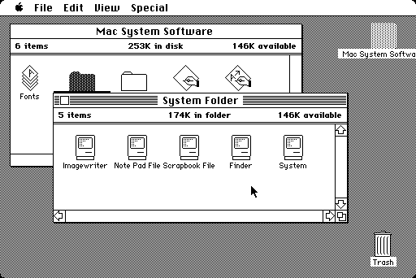
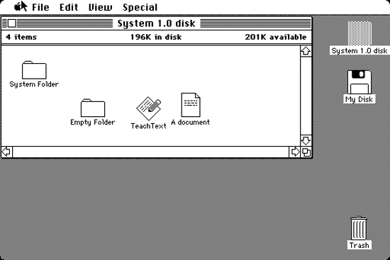

System 1.0 1984
В версии System 1.0 Apple реализовала удобный графический интерфейс: понятное взаимодействие с элементами в оконном режиме было заложено уже в первой редакции. Более совершенные версии отличаются от «предка» лишь качеством графики и расширенным функционалом.



System 2.0 – 6.0 1985–1988
В этот период появились дополнительные возможности, настройки и стандартные приложения, а также иерархическая файловая система. Особое внимание уделялось адаптации под новое железо: слоты расширения, периферия, новые процессоры и более ёмкие накопители. Полноценная многозадачность появилась только в версии System 5.
System 7.0 – 7.6 1991–1996
Первое масштабное обновление ОС вышло лишь через семь лет: цветной интерфейс, значительно улучшенная многозадачность, поддержка новых компонентов и программ — как собственных, так и сторонних разработчиков.
System 8 1997
Выпущена летом 1997 года после возвращения Стива Джобса в Apple. В отличие от планировавшейся нумерации 7.7, Джобс выбрал новое имя. Apple прекратила лицензировать ОС сторонним производителям — с тех пор «яблочная» ОС устанавливается exclusively на устройства Apple. За первые две недели продано 1,2 млн копий, за полгода — ещё три миллиона. Из изменений: больше цвета в интерфейсе, новые темы оформления и панель управления.
Mac OS 9 1999
23 октября 1999 года вышла последняя версия классических Mac OS. Нововведения: шифрование данных по технологии Keychain, работа с удалёнными серверами, улучшенная поддержка USB. 5 декабря 2001 года вышло последнее обновление — Mac OS 9.2.2.
Mac OS X 10.0 Cheetah 2001 публичная бета — 13 сентября 2000, $30
24 марта 2001 года — релиз первой официальной версии OS X 10.0. Apple сделала кардинальный шаг: совершенно новый интерфейс Aqua, приложения TextEdit, Просмотр, Почта и QuickTime. Cheetah была очень требовательна к железу: 128 МБ ОЗУ и 800 МБ на диске (рекомендовано 1,5 ГБ) — в то время роскошь, стандартом было 64 МБ RAM.
Mac OS X 10.1 Puma 2001
Второй крупный запуск — всего через полгода, 25 сентября 2001 года. Владельцы 10.0 обновлялись бесплатно, а OS X стала системой по умолчанию на всех новых Mac. Основной упор — на производительность: удобная запись CD/DVD, воспроизведение DVD, поддержка 200+ принтеров, OpenGL на 20% быстрее, AppleScript, ColorSync 4.0 и Image Capture. Несмотря на улучшения, Puma критиковали за недостаточную производительность и надёжность.
Mac OS X 10.2 Jaguar 2002
Новые приложения iChat и Адресная книга, большой шаг в сторону доступности для людей с ограниченными возможностями. Стартовая заставка впервые показала логотип Apple в виде надкушенного яблока вместо «счастливого Mac».
Mac OS X 10.3 Panther 2003
Apple отказалась от Internet Explorer для Mac в пользу собственного браузера Safari, одновременно улучшив взаимодействие с Windows — вплоть до поддержки службы каталогов Active Directory. Главное нововведение — технология Exposé: мешающие окна можно убирать за пределы экрана.
Mac OS X 10.4 Tiger 2005
Появились фирменный поиск Spotlight и виджеты (календарь, калькулятор, часы и др.), поддержка процессоров Intel и приставки Apple TV.
Mac OS X 10.5 Leopard 2007
Между Tiger и Leopard прошёл самый долгий перерыв — Apple запускала первый iPhone. Leopard стала по-настоящему многозадачной и многопользовательской: поддержка 64-битных приложений, утилита резервного копирования Time Machine и Boot Camp для установки сторонних ОС.
Mac OS X 10.6 Snow Leopard 2009
Главная задача — производительность и удобство. Полный отказ от архитектуры PowerPC: система работает только на Intel и стала полностью 64-разрядной. Цена: $129 для новых пользователей, $29 для владельцев Leopard, $9,95 — для купивших Mac с Leopard в период с 8 июня по 26 декабря 2009 года.
Mac OS X 10.7 Lion 2011
Более 250 новых функций; за первый день скачано свыше 1 млн копий. Дистрибуция — только через Mac App Store за $29,99: Lion стала первой ОС Apple, не распространявшейся на CD/DVD. Появились жесты многозадачности, Launchpad, функция «Возобновить», Lion Recovery и облачное хранилище iCloud.
Mac OS X 10.8 Mountain Lion 2012
Выпущена на год раньше плана — цикл разработки сократился с двух лет до одного. Настольная система перенимает возможности iOS: Центр уведомлений, Заметки, Напоминания, iMessage вместо iChat, тесная интеграция с iCloud — всего более 200 нововведений. Последняя ОС «кошачьего» семейства.
Mac OS X 10.9 Mavericks 2013
Начало новой традиции названий — в честь памятных мест Калифорнии (Mavericks — популярный пляж). Apple впервые предложила бесплатное обновление, действующее и для всех последующих версий. Нововведения: поддержка нескольких мониторов, теги, Связка ключей iCloud, приложения Карты и iBooks.
Mac OS X 10.10 Yosemite 2014
Названа в честь Йосемитского национального парка. Кардинально новый плоский дизайн с эффектами прозрачности в духе iOS 7/8. Революционная функция Handoff: начав печатать в Pages на iOS, можно мгновенно продолжить на Mac; Continuity позволяет принимать звонки прямо с Mac.
Mac OS X 10.11 El Capitan 2015
Фокус на стабильности и производительности: крупных нововведений нет, зато много мелких улучшений. Модернизированы Safari, Spotlight, Почта и Заметки, упрощён функционал Дисковой утилиты.
macOS 10.12 Sierra 2016
Apple переименовала Mac OS X в macOS. Появились Siri, Apple Pay на Mac и разблокировка компьютера с помощью Apple Watch.
macOS 10.13 High Sierra 2017
Релиз 25 сентября 2017 года. Главные нововведения — новая файловая система APFS и технология Metal 2.
macOS 10.14 Mojave 2018
Представлена 4 июня 2018 года на WWDC-2018. Крейг Федериги заявил, что Apple не будет объединять macOS и iOS. Появились портированные с iOS приложения (Акции, Новости, Дом, Диктофон), долгожданная Тёмная тема, обновлённый Mac App Store, групповые вызовы FaceTime и «Быстрые действия» в Finder.
macOS 10.15 Catalina 2019
Анонсирована 3 июня 2019 года на WWDC. Названа в честь острова Санта-Каталина. Основные нововведения:
- полный отказ от 32-битных приложений;
- новые приложения Подкасты, Музыка и TV вместо iTunes;
- приложение «Экранное время»;
- функция Sidecar — iPad как второй дисплей для Mac;
- объединение «Найти друзей» и «Найти iPhone» в приложение «Локатор».
macOS 11 Big Sur 2020
Анонсирована 22 июня 2020 года на WWDC 2020, выпущена 12 ноября 2020 года. Новый дизайн интерфейса и поддержка собственных ARM-процессоров Apple M1, улучшенная безопасность, переработанный Safari и поддержка приложений iOS/iPadOS на Mac.
macOS 12 Monterey 2021
Минимум глобальных изменений — обновлены FaceTime, Safari, Сообщения, Карты и Заметки. Главные новинки: «Универсальное управление» (общие клавиатура, мышь и трекпад для Mac и iPad) и долгожданная поддержка AirPlay на Mac.
macOS 13 Ventura 2022
Новый инструмент «Постановщик» (Stage Manager) для организации окон, полностью переработанные «Системные настройки» в стиле iPadOS, обновлённые Почта, Часы, Сообщения, Safari, Карты и FaceTime, новый дизайн Siri.
macOS 14 Sonoma 2023
Виджеты прямо на рабочем столе (в том числе виджеты iPhone), профили в Safari для разделения вкладок по задачам, эффекты жестами рук во время видеозвонков, улучшения в Сообщениях и Заметках.
macOS 15 Sequoia 2024
Новая веха: внедрение Apple Intelligence — искусственного интеллекта на базе технологии ChatGPT. «Умные» инструменты для написания текстов, генерации изображений и кратких пересказов, значительно улучшенная Siri с пониманием контекста. Также появились «Видеоповтор iPhone», отдельное приложение «Пароли» и новые возможности Заметок, Калькулятора, Safari и iMessage.